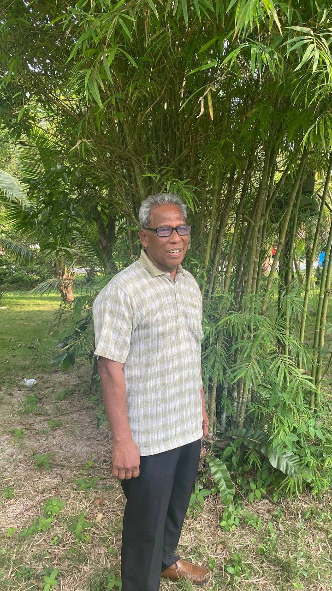
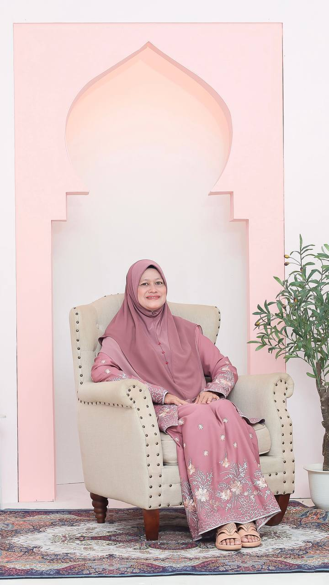
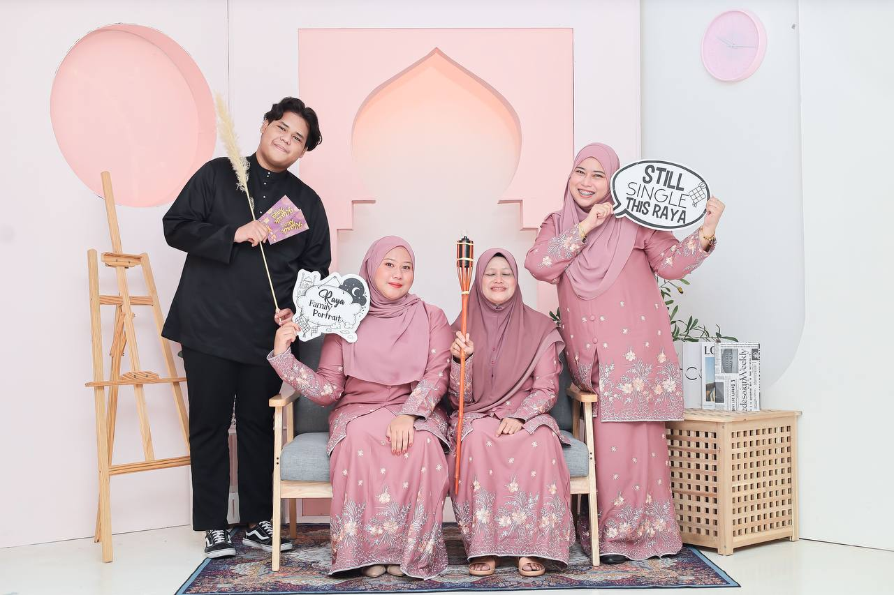
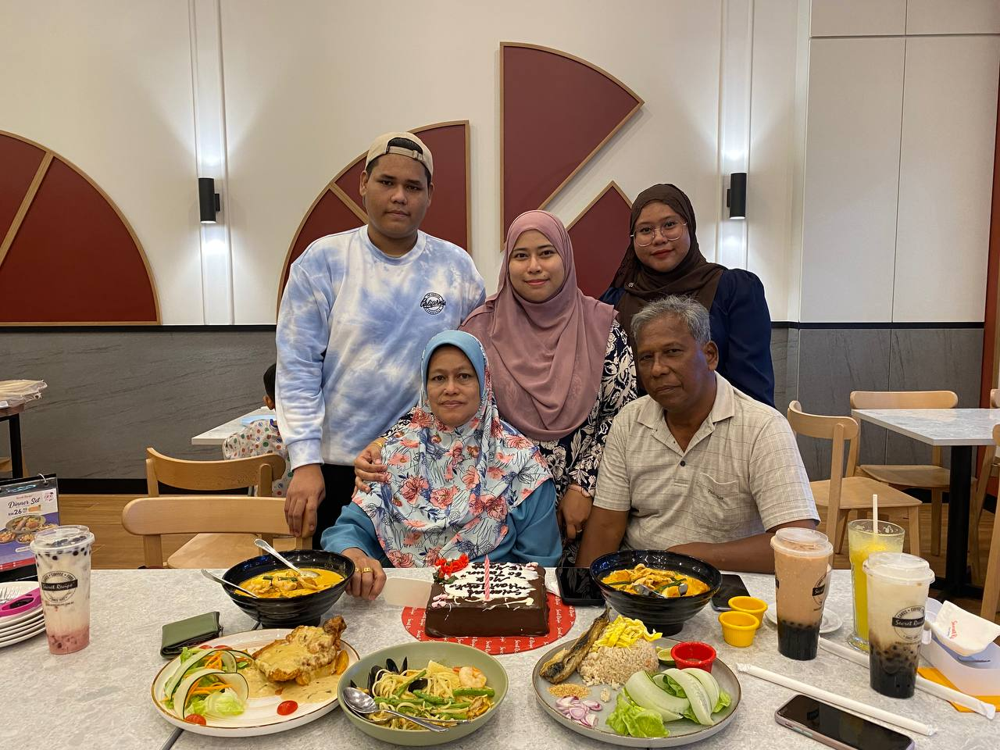

<html>
<head>
<meta name="viewport" content="width=device-width, initial-scale=1">
<style>
body {
  margin: 0;
  font-family: Arial, Helvetica, sans-serif;
}

.topnav {
  overflow: hidden;
  background-color: #333;
}

.topnav a {
  float: left;
  color: #f2f2f2;
  text-align: center;
  padding: 14px 60px;
  text-decoration: none;
  font-size: 17px;
}

.topnav a:hover {
  background-color: #ddd;
  color: black;
}

.topnav a.active {
  background-color: #428af5;
  color: white;
}
.center {
  display: block;
  margin-top:15px;
  margin-left: auto;
  margin-right: auto;
  margin-bottom: 50px;
  width: 1280;
  height: 720;
}

#centered-heading {
  font-size: 40px;
  text-align: center;
  color: white;
  font-weight: bold;
}
  
</style>
</head>

<body style="background-image: url('images/wallpaper.jpeg');"></body>
  <div class="topnav" style="position: fixed; top: 0; left: 0; width: 100%;">
  <a href="index.html">Home page</a>
  <a href="biodata.html">Biodata</a>
  <a class="active" href="family.html">Family</a>
  <a href="education.html">Education</a>
  <a href="gallery.html">Gallery</a>
 </div>
</html>

<br>
<br>
<br>
  
<center>
  	<h1 id="centered-heading">My Family</h1>
<br>
     
     
     

     <br>

     

     <br>

     

    
  
<style>
</style>
    </center>

</body>
<br>
<br>

<body>
  <style>
    heading {
      font-size: 40px;
      font-weight: bold;
      margin-left: 500px;
      color: white;
    }
    p1 {
      margin-left: 10px;
      color: white;
      font-weight: bold;
    }
    p {
      margin-left: 240px;
      margin-right: 240px;
      color: white ;
      text-align: center;
    }
  </style>
<heading>My Family Biodata</heading>

<br>
<br>
<br>
<p> Let me introduce you to my family. We are a close-knit and loving group. First, there's my father, Mustafa Bin Mohd Shafee. His is 61-year-old and he’s a hardworking individual who has always been my pillar of support. He enjoys reading and spending time outdoors.</p>

<p> Next, we have my mother, Zainab Binti Khamis. She's 60-year-old and she’s a compassionate and creative person, with a talent for cooking and gardening. Her warm and nurturing nature brings a lot of joy to our family.</p>

<p> I also have an older sister named Siti Aminah Binti Mustafa. She is an accomplished finance and work in University Petronas. She works in the finance industry. She is an accomplished finance professional with expertise in investment analysis and portfolio management. My older sister has a keen eye for numbers and a deep understanding of financial markets. Her dedication and analytical skills have earned her recognition in her field.</p>

<p> In addition, I have two brothers Muhammad Asri Bin Mustafa and Muhammad Fitri Bin Mustafa. My first brother is 28-year-old and he already married. My brother has their own business wayering and my second brother 26-year-old work with my first brother as an assistant.</p>

<p>Lastly, my younger sister Siti Nur Afizah Binti Mustafa 20-year-old. After end of study form five she decided to work and not continue her study. Currently now she works hard in Mattel as operate.</p>

<p>We enjoy spending quality time as a family, whether it's cooking and enjoying meals together, going on hikes, or simply having meaningful conversations. Each member of my family contributes their unique qualities, making our bond strong and our home filled with love and laughter.</p>
<br>

</body>
</html>